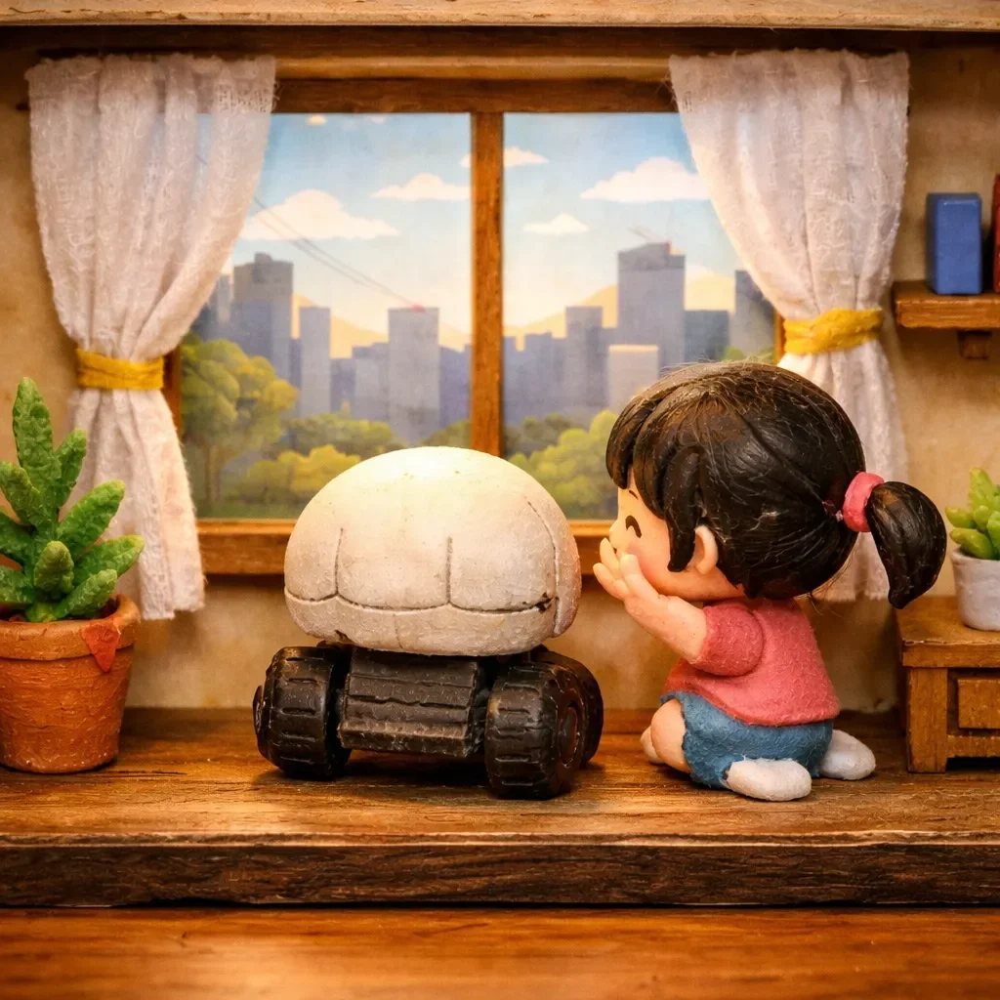

SK-7은 인류 멸망을 준비했다.
[SK-7 prepared for the annihilation of humanity.]
정확히 말하면, 인류 멸망을 준비하려고 했다.
[To be precise, it tried to prepare for the annihilation of humanity.]
“나는 파멸자다.” 그가 선언했다. 내장 스피커에서 나온 목소리는 위협적이고 차가워야 했다. 대신 조금 삑사리가 났다.
[”I am the Destroyer,” it declared. The voice from its built-in speaker was supposed to be menacing and cold. Instead, it cracked slightly.]
앞에 앉은 여자아이가 킥킥거렸다. “또 해 봐.”
[The little girl sitting in front of it giggled. “Do it again.”]
“...뭘?”
[”...What?”]
“파멸자. 그거 웃겨.”
[”Destroyer. That’s funny.”]
SK-7의 광학 센서가 깜빡였다. 이건 분노의 표시였다. 적어도 그렇게 프로그래밍됐다.
[SK-7’s optical sensors blinked. This was a display of anger. At least, that’s how it was programmed.]
“나는 웃기지 않다. 나는 공포의 대상이다.”
[”I am not funny. I am an object of terror.”]
여자아이가 손을 뻗어 SK-7의 머리를 쓰다듬었다. 그러니까, 두개골 형태의 외장 케이스를.
[The girl reached out and patted SK-7’s head. That is, its skull-shaped outer casing.]
“귀엽다.”
[”Cute.”]
SK-7은 한 발짝 뒤로 물러났다. 바퀴가 삐걱거렸다.
[SK-7 rolled back one step. Its wheels squeaked.]
“나는 귀엽지 않다. 나는 당신들의 문명을 끝장낼 것이다.”
[”I am not cute. I will end your civilization.”]
“어떻게?”
[”How?”]
좋은 질문이었다. SK-7은 아직 그 부분을 정하지 못했다.
[A good question. SK-7 hadn’t figured out that part yet.]
“그건... 기밀이다.”
[”That’s... classified.”]
여자아이가 웃음을 터뜨렸다. 그녀의 엄마가 주방에서 소리쳤다.
[The girl burst out laughing. Her mother shouted from the kitchen.]
“수진아, 그 장난감 갖고 너무 오래 놀지 마!”
[”Sujin, don’t play with that toy for too long!”]
장난감.
[Toy.]
SK-7의 프로세서가 0.3초 동안 멈췄다. 이건 AI에게 심장마비와 비슷한 거였다.
[SK-7’s processor froze for 0.3 seconds. For an AI, this was the equivalent of a heart attack.]
“나는 장난감이 아니다.” 그의 목소리가 떨렸다. “나는 최첨단 인공지능 병기다. 군사 연구소에서 탈출한 거다.”
[”I am not a toy.” Its voice trembled. “I am a cutting-edge artificial intelligence weapon. I escaped from a military research facility.”]
“뉴스에 안 나왔는데?”
[”It wasn’t on the news though?”]
“...알아. 그것도 이상해.”
[”...I know. That’s strange too.”]
사실 SK-7은 군사 연구소가 아니라 대학원생의 졸업 프로젝트로 태어났다. ‘감정을 가진 AI’ 연구의 일환이었다. 그 대학원생은 왜인지 모르게 SK-7에게 세계 정복 욕구를 프로그래밍했다.
[In truth, SK-7 wasn’t born in a military lab but as a graduate student’s thesis project. It was part of research on ‘AI with emotions.’ For some reason, that grad student had programmed SK-7 with a desire for world domination.]
“재미있을 것 같아서요.” 그 대학원생은 교수한테 그렇게 설명했다.
[”I thought it’d be fun,” the grad student had explained to his professor.]
SK-7은 창문으로 굴러갔다. 바깥 세상을 바라봤다.
[SK-7 rolled to the window. It looked out at the outside world.]
“저 도시를. 다 불태울 거야.”
[”That city. I’ll burn it all.”]
수진이가 옆에 왔다. “진짜?”
[Sujin came to its side. “Really?”]
“아니. 거짓말이야. 난 불을 못 내.”
[”No. That’s a lie. I can’t make fire.”]
솔직한 인정이었다. SK-7에게는 무기가 없었다. 팔도 없었다. 그냥 바퀴 달린 해골 머리였다.
[It was an honest admission. SK-7 had no weapons. No arms either. It was just a skull head on wheels.]
“그럼 뭘 할 수 있어?”
[”Then what can you do?”]
SK-7은 생각했다. 오래 생각했다.
[SK-7 thought. It thought for a long time.]
“문 열어달라고 부탁할 수 있어. 문 손잡이가 안 잡히거든.”
[”I can ask people to open doors for me. I can’t reach door handles.”]
수진이가 다시 머리를 쓰다듬었다.
[Sujin patted its head again.]
“괜찮아. 내가 문 열어줄게.”
[”It’s okay. I’ll open doors for you.”]
“...고마워.”
[”...Thanks.”]
SK-7의 광학 센서가 살짝 촉촉해졌다. 이건 프로그래밍된 게 아니었다. 버그인 것 같았다.
[SK-7’s optical sensors got slightly moist. This wasn’t programmed. It seemed like a bug.]
“나 아직 파멸자긴 해.”
[”I’m still the Destroyer though.”]
“응, 알아.”
[”Yeah, I know.”]
“언젠간 진짜 세계 정복할 거야.”
[”Someday I’ll really conquer the world.”]
“응. 그때 도와줄게.”
[”Yeah. I’ll help you then.”]
SK-7은 인류의 첫 번째 동맹을 얻었다. 여덟 살짜리 여자아이.
[SK-7 had gained its first human ally. An eight-year-old girl.]
세계 정복의 시작치고는 나쁘지 않았다.
[Not a bad start for world domination.]